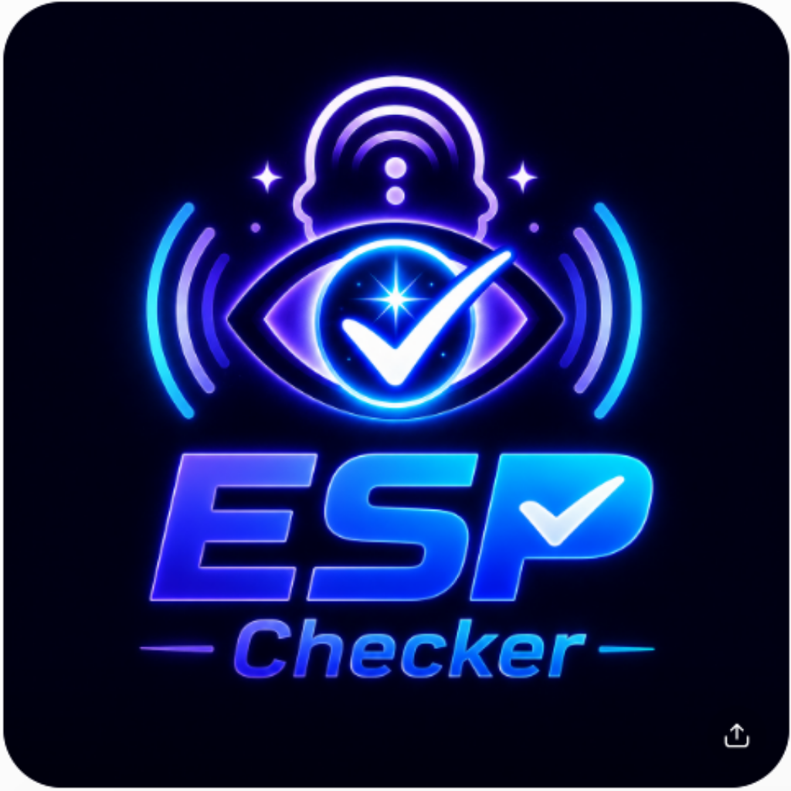

Check your ESP Today!
ESPChecker is a simple, addictive prediction game. A square lights up on the grid — you tap where you think the next one will land. Guess right and the box turns red. Keep guessing right on the very first try, over and over, and you're building a real streak.
Choose how many squares you're up against — from a coin-flip 2-square board to a brutal 64-square grid.
One square is lit. Tap where you think the next one will land before it happens.
An exact match turns red and ends the round. Everything else — misses, near-misses — just keeps the round going.
Every game logs your average tries-to-hit and your best first-try streak, tied to a handle you choose — not your real identity.
Every guess is color-coded by how close it was — so even a miss tells you something.
Every grid level has its own leaderboard, ranked by average tries-to-hit — not luck on a single try. Pick a handle, keep playing, and watch your rank climb in real time as others play too.